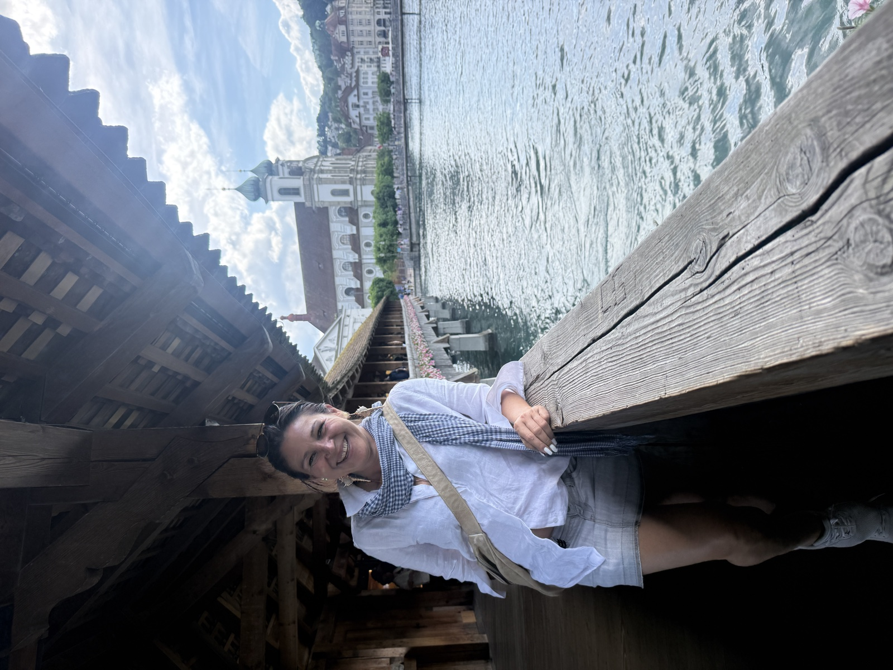

Beëdigde vertalingen
Vertalingen Roemeens-Nederlands en Nederlands-Roemeens voor aktes, attesten, diploma's, administratieve stukken en persoonlijke dossiers.
Roemeens ⇄ Nederlands | Ninove, België
Lacramioara Bran is beëdigde tolk en vertaler voor Roemeens-Nederlands en Nederlands-Roemeens. Ze helpt particuliere klanten met officiële documenten, afspraken, instanties en belangrijke gesprekken.
U neemt rechtstreeks contact op met Lacramioara. Mail uw documenten door en u krijgt duidelijk antwoord over de mogelijkheden, timing en praktische afspraken.

Wat ze doet
Voor mensen die een betrouwbare tolk of beëdigde vertaling nodig hebben in België.
Vertalingen Roemeens-Nederlands en Nederlands-Roemeens voor aktes, attesten, diploma's, administratieve stukken en persoonlijke dossiers.
Ondersteuning bij gesprekken met instanties, notarissen, advocaten, sociale diensten of andere afspraken waar heldere communicatie belangrijk is.
Lacramioara woont in Ninove en verplaatst zich voor opdrachten, afhankelijk van plaats, duur en beschikbaarheid.
Voor particuliere klanten
Over Lacramioara
Lacramioara Bran is beëdigde tolk en vertaler voor Roemeens-Nederlands en Nederlands-Roemeens. Ze werkt ook in opdracht voor justitie en politie. Deze website is er vooral voor particuliere klanten die hulp nodig hebben met documenten of belangrijke gesprekken.
Ze werkt discreet, legt de stappen duidelijk uit en zoekt per opdracht een praktische oplossing.
Contact
Voor een correcte inschatting stuurt u best duidelijke scans of foto's van de documenten door, samen met de gewenste termijn.
Mail de documenten als bijlage. Voor een snelle vraag kunt u ook bellen of een bericht sturen.